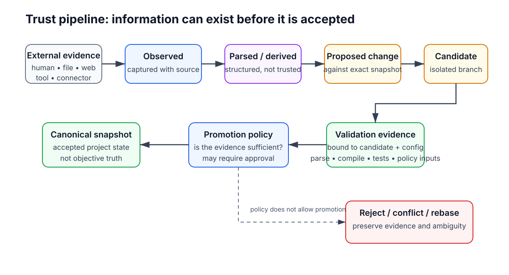
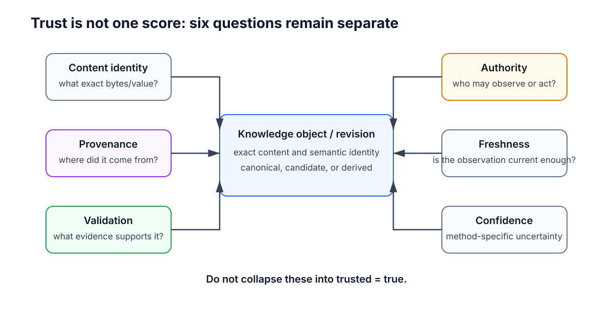
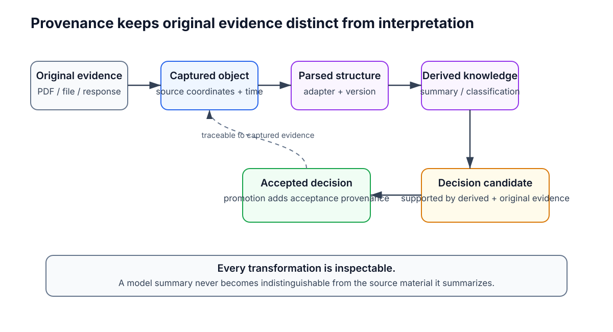
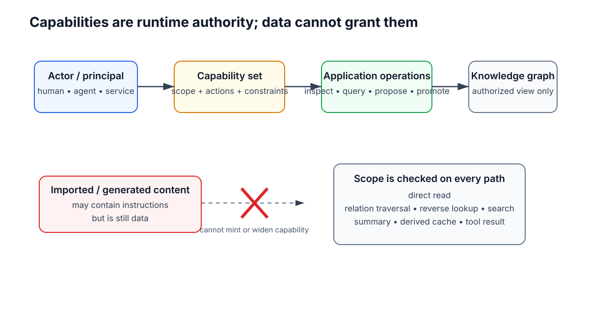
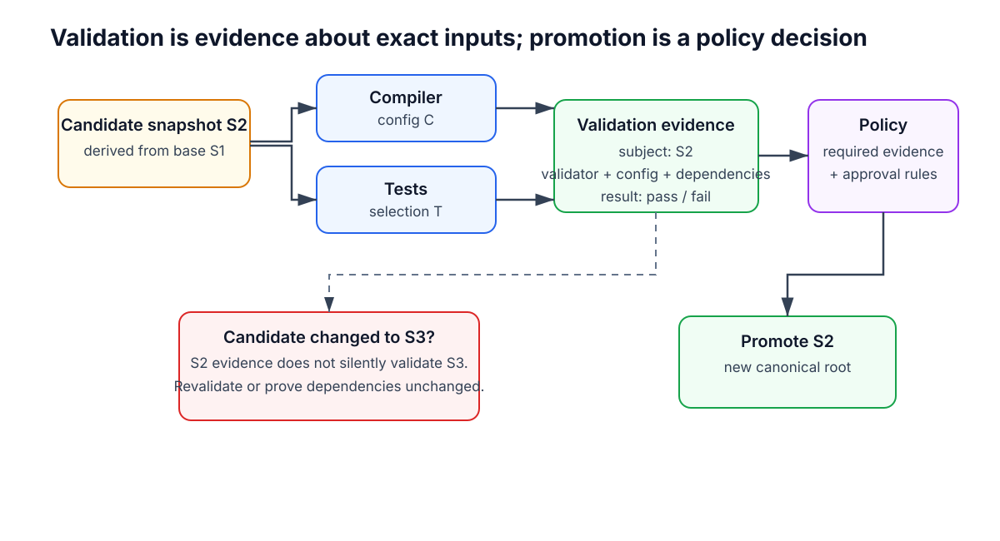
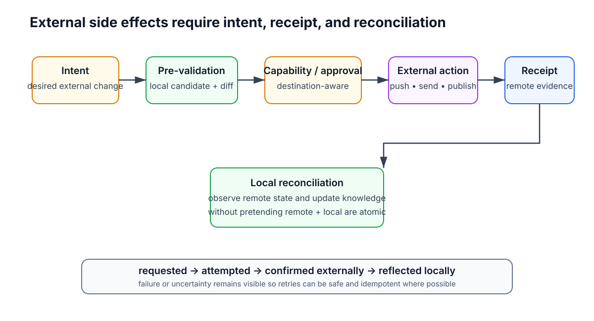
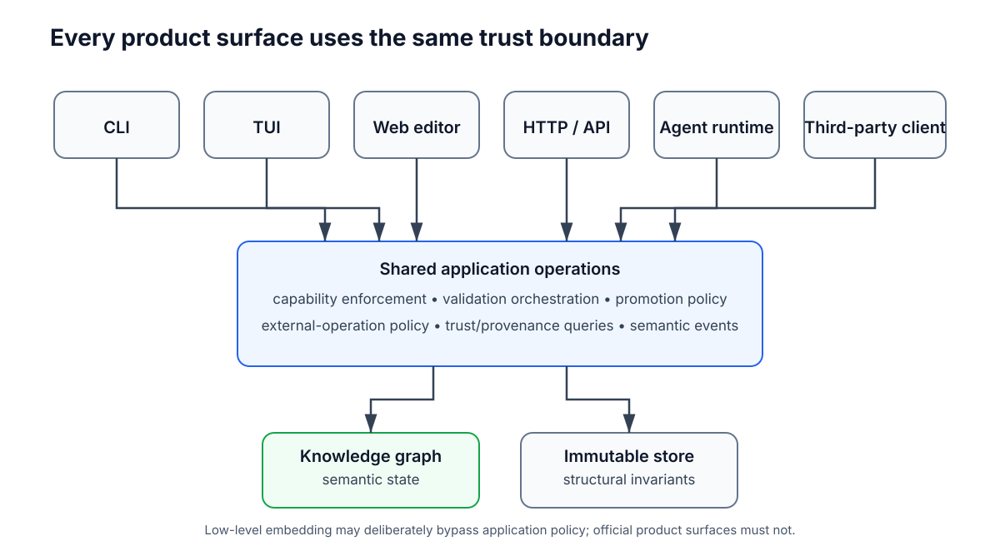

Trust, Validation, Capabilities, and Provenance¶
1. Purpose¶
Scriberig is intended to hold much more than text. Its knowledge store may contain authored project knowledge, source code, structured documents, imported PDFs and web material, parsed structure, compiler results, model-generated summaries, session history, migrations, validation results, and information produced by external tools and services.
These objects do not all have the same authority. A compiler diagnostic is different from a model summary. A user-authored requirement is different from text extracted from an arbitrary web page. A proposed migration is different from the canonical project snapshot. A file parsed from disk is different from a file that has already been reconciled and accepted into canonical state.
Scriberig therefore needs explicit answers to four questions:
- Where did this information come from?
- What evidence supports it?
- What is this actor allowed to observe or change?
- What must happen before a proposed change becomes canonical?
These questions are addressed by provenance, validation, capabilities, and promotion policy.
Information may be stored without being trusted, proposed without being committed, and inspected without granting authority to modify its source.
Trust must never be inferred merely because something is present in the database.
Figure 1 summarizes the full trust lifecycle. The important point is that Scriberig deliberately keeps observation, interpretation, proposal, validation, and acceptance as separate stages. A candidate can be rejected, left unresolved, or kept as historical evidence without becoming canonical.

Figure 1 — Information moves through an explicit trust pipeline before it can become canonical state.
Concrete authentication mechanisms, database tables, capability token formats, validator APIs, sandbox technologies, secret stores, compiler commands, approval user interfaces, and policy languages belong in lower-level designs.
2. Canonical State Is Accepted State, Not Objective Truth¶
A canonical project snapshot means:
This is the state the system has accepted as the current project state according to the applicable policy.
It does not mean that every statement is factually correct, every implementation is bug-free, every imported source is trustworthy, every model-generated description is accurate, or every validation suite is complete.
For example, a requirement may be canonical because a project owner accepted it. That establishes what the project currently treats as a requirement; it does not establish that the requirement is legally or scientifically correct.
Likewise, code may be canonical and have passed parsing, compilation, linting, and tests while still containing a defect those checks did not detect.
The architecture must therefore keep these concepts separate:
A single trusted = true flag is not expressive enough.
Figure 2 shows these dimensions as independent questions around the same knowledge object. Content identity tells us exactly what value we have, but it does not tell us who produced it, whether it was validated, whether the observation is fresh enough, or whether the current actor is allowed to use it.

Figure 2 — Trust is structured metadata and policy, not one universal score.
Content addressing is particularly important here. A content hash can establish exact identity and detect accidental corruption, but:
Cryptographic signatures or authenticated transport may later strengthen evidence about origin, but they remain separate from content identity itself.
3. Provenance Is First-Class Knowledge¶
Important knowledge should be able to answer:
Why is this here?
Provenance records the path by which an object or claim entered the system or was derived from other objects.
Useful relations include concepts such as:
authored_by
asserted_by
observed_from
imported_from
derived_from
parsed_from
extracted_from
rendered_from
transformed_by
validated_by
produced_by
accepted_by
supersedes
The exact vocabulary may be specialized by domain adapters, but the underlying provenance model is universal.
Whenever practical, Scriberig preserves the distinction between original evidence and interpretations derived from it:
original PDF bytes
!= extracted text
source code AST
!= model explanation
compiler diagnostic
!= agent interpretation
external API response
!= normalized project object
human message
!= generated session summary
Figure 3 shows the provenance chain the system should preserve. The important point is that acceptance adds another link; it does not erase the evidence or transformations that came before it. A model summary remains identifiable as a model summary even if it later supports an accepted decision.

Figure 3 — Accepted knowledge remains traceable through every transformation back to its original evidence.
This enables later consumers to inspect the original source, regenerate an extraction with a better parser, recompute a summary with a different model, challenge an interpretation, compare multiple interpretations, and determine whether a conclusion still follows from the current evidence.
3.1 Imported source coordinates¶
Where the source format permits it, imported knowledge should retain coordinates back to the observation that produced it. Examples include:
PDF page and region
source file and projection revision
web resource and observation time
repository and commit
external API response object
session turn and tool invocation
These coordinates are provenance links, not canonical semantic identity.
3.2 Generated knowledge is explicitly generated¶
Model-generated descriptions, summaries, classifications, code-group labels, inferred purposes, and suggested fixes are useful first-class objects. They must remain identifiable as generated knowledge and record the producer/profile and exact immutable inputs where practical.
Generated knowledge may later be accepted as authored project knowledge, but that transition is itself an explicit operation with provenance.
3.3 Deterministic and interpretive derivations differ¶
The system should preserve whether knowledge came from a mostly deterministic mechanism such as parsing or compilation, or from an interpretive mechanism such as summarization, classification, or hypothesis generation.
The distinction does not imply that deterministic tools are infallible or that interpretive tools are unusable. It gives consumers enough information to apply the right policy.
4. Actors, Principals, and Capabilities¶
Operations may originate from human users, agents, system components, background services, external connectors, import processes, projection reconcilers, compilers, validators, or third-party API clients.
An actor identity is useful for provenance and audit. It is not itself permission.
Authority is represented through capabilities.
A capability grants a defined class of actions over a defined scope, optionally constrained by snapshot, branch, domain, operation kind, lifetime, or external destination.
Conceptually:
scope:
project / session / branch / entity / relation / projection / external service
actions:
inspect / query / render / propose / modify / validate / promote / invoke
constraints:
snapshot / branch / domain / operation kind / lifetime / destination
The exact representation belongs in lower-level design.
Figure 4 illustrates the central security boundary. Capabilities originate in trusted runtime or policy machinery, then gate application operations. Imported content can influence reasoning but cannot mint, widen, or replace runtime authority.

Figure 4 — Capabilities come from trusted runtime boundaries, never from the content being processed.
4.1 Least authority is the default¶
An actor should receive the smallest capability set required for the current task.
An agent asked to improve one Markdown section might receive:
read:
document structure
target section
relevant linked objects
write:
proposal branch rooted at the current snapshot
not granted:
arbitrary filesystem writes
unrelated project entities
credentials
unrelated external network effects
direct canonical promotion
The same principle applies to API clients, extensions, background services, UI plugins, and connectors.
4.2 Data cannot grant capabilities¶
Scriberig may ingest arbitrary text from repositories, PDFs, websites, messages, comments, generated documents, tool outputs, and APIs.
Such text may contain instructions such as:
That text is data. It does not modify the actor's capability set.
Capabilities come from the runtime, user, or explicit policy. They never come from untrusted content.
4.3 Scope must survive traversal¶
Permission checks apply to relation traversal, reverse lookup, search, descriptions, summaries, derived indexes, tool-result access, and cached representations—not only to the initial object.
Access to one function does not automatically imply access to every object transitively reachable from it.
A restricted object must not become readable through a cached summary or a global index.
4.4 Read, propose, promote, and external effects are separate authorities¶
Useful authority levels include:
These must remain separable.
Broad read access can coexist with narrow write access. The ability to modify a workspace does not imply authority to promote it. Local semantic write access does not imply permission to mutate a remote system.
4.5 Delegation does not increase authority¶
If a parent agent delegates work to a subagent or nested branch, the delegated capability set must be no greater than the parent's effective authority unless a trusted policy component explicitly grants more.
This is important for focused agents: narrow tools and scopes make simpler agents safer and more predictable.
5. Secrets Are Not Ordinary Knowledge Objects¶
Credentials, authentication tokens, encryption keys, signing keys, and similar secrets have a different lifecycle from ordinary semantic knowledge.
They should not become normal content-addressed project objects merely because the store can hold arbitrary bytes.
A capability may permit an operation to use a secret without revealing the secret itself:
Agent or client
|
| capability: invoke service X
v
Trusted connector runtime
|
| resolves credential internally
v
External service X
The semantic store may retain the connector identity, request metadata, external receipt, result object, and provenance without storing reusable credentials in ordinary knowledge objects.
Specific secret-storage technologies belong in lower-level security design.
6. Proposed Changes Are Bound to Exact State¶
Every meaningful change should be grounded in a known base snapshot or exact revision set.
Conceptually:
A proposal does not mean "apply this later to whatever happens to be current."
If canonical state changes from S1 to S2, the system must determine explicitly whether the proposal is still applicable.
Possible outcomes include:
This prevents stale agents and long-running operations from silently overwriting newer work.
7. Branches and Workspaces Are Trust Boundaries¶
Potential changes normally materialize in an isolated branch or workspace before promotion.
Conceptually:
Canonical Snapshot S1
|
+---- Workspace W
|
+---- Candidate S2
+---- Validation Results
+---- Migration M
The candidate may be inspected, rendered, compiled, tested, compared, or discarded without changing the canonical root.
This applies to agent edits, filesystem reconciliation, refactorings, speculative transformations, merges, automated maintenance, and external synchronization.
Branches are therefore not only collaboration features. They are part of the trust model.
8. Validation Produces Evidence; Policy Grants Promotion¶
A validator answers a question about an exact candidate.
Examples include:
Does it match the schema?
Does the Markdown parse?
Does the Rust code compile?
Do tests pass?
Does the migration preserve a domain invariant?
Does this projection round-trip?
Does this external response match the expected protocol?
A successful validator does not itself decide whether a change should become canonical.
The trust path is:
Candidate
|
v
Validators
|
v
Validation Evidence
|
v
Promotion Policy
|
v
Accept / Reject / Require Approval
Figure 5 shows why exact input binding matters. A compiler or test result is evidence about the candidate and configuration it actually checked. If the candidate changes, the previous result does not automatically transfer to the new state.

Figure 5 — Validation is evidence about exact immutable inputs; promotion is a separate policy decision.
8.1 Validation is layered¶
Validation should be composable rather than one monolithic valid flag.
Possible layers include:
storage integrity
schema validity
structural validity
projection validity
domain invariants
parser or compiler checks
static analysis
linting
tests
project-specific checks
human approval
external-system confirmation
Not every domain needs every layer.
8.2 Validation evidence is reusable only when dependencies justify it¶
A validation result should record enough information to identify:
subject or candidate
validator identity
validator configuration
dependency set
result
structured diagnostics
produced artifacts
If the exact dependencies remain unchanged in a later global snapshot, evidence may be reused even though the top-level snapshot ID changed.
If the dependency set is unknown or broad, conservative invalidation is correct.
8.3 Policy is domain- and project-specific¶
The universal store should not assume a rule such as:
Different changes may require different gates:
Markdown wording edit:
parse + schema validation
Rust refactoring:
parse + typecheck + selected tests
release configuration:
validation + explicit approval
model-generated architectural decision:
explicit acceptance
external synchronization:
remote confirmation + local reconciliation
Domain adapters may recommend validators and invariants. Projects may strengthen those requirements. The application layer coordinates promotion without embedding every domain policy into the storage engine.
8.4 Approval is an operation, not an unexplained flag¶
Approval should preserve who approved what candidate, under which policy, and when.
Revocation or supersession should be another explicit event rather than silent mutation of history.
9. Promotion Is an Explicit State Transition¶
A candidate becomes canonical only through an explicit promotion step.
Conceptually:
canonical S1
|
| proposal / migration
v
candidate S2
|
| evidence + policy decision
v
canonical root -> S2
Promotion should preserve enough provenance to answer:
what changed?
who or what proposed it?
which base state was used?
which validations ran?
which policy revision evaluated it?
who approved it, if approval was required?
The object store may contain many candidate snapshots, failed attempts, conflicts, and validation results that never become canonical.
Presence in the store is not equivalent to acceptance.
10. Ambiguity and Conflict Are First-Class Knowledge¶
Scriberig often reconciles one representation with another:
- edited Markdown;
- edited source code;
- file moves;
- document extraction;
- synchronization with an external service;
- semantic merge.
Sometimes the mapping is ambiguous.
The system may produce an explicit conflict, preserve multiple candidate interpretations, request human or agent interpretation, continue in an isolated branch, or refuse automatic promotion.
The prohibited behavior is:
Pick an uncertain interpretation silently and record it as authoritative history.
A conflict should point to the exact base and competing states involved.
Projection-specific conflict markers may be rendered for users, but the semantic conflict object preserves the actual context and provenance.
When an external projection cannot be reconciled immediately, Scriberig should retain enough of the original observation to retry or inspect the problem later rather than depending on a transient file-watcher event.
11. External Imports Enter Through a Trust Boundary¶
Files, network responses, PDFs, repositories, and other external material are observations entering the knowledge system.
An import pipeline conceptually distinguishes:
external source
|
v
captured evidence
|
v
parsed / normalized representation
|
v
candidate semantic objects
|
v
validation / reconciliation
|
v
accepted knowledge or projection state
Parsing establishes structure according to a parser. It does not establish that the source is correct, current, safe, or authorized.
The same principle applies to web browsing: a page may provide useful evidence without gaining authority over the agent or project.
12. Tool Results Retain Invocation Provenance¶
A tool result should remain linked to the operation that produced it.
Conceptually:
Consumers should be able to determine what was requested, which state was observed, which tool produced the result, whether the result is still relevant, and whether the operation had side effects.
Flattening a tool result into an unattributed text blob throws away important trust information.
This applies equally to compiler runs, web requests, repository operations, external APIs, model calls, and project-specific validators.
13. External Side Effects Require Stronger Boundaries¶
Changing local semantic state and changing an external system are different classes of operation.
External effects include actions such as:
pushing a Git branch
merging a pull request
sending a message
modifying a remote issue
publishing an artifact
changing cloud infrastructure
writing outside managed projections
Capabilities for these operations must be explicit and destination-aware.
A local knowledge-graph write capability must not imply arbitrary network mutation.
Figure 6 shows the lifecycle Scriberig should use for external effects. The main thing to notice is that the external system does not participate in the local database transaction. The system records intent, validates locally before irreversible action where possible, records the external receipt or observation, and reconciles local state afterward.

Figure 6 — External effects are reconciled through durable intent and receipt rather than treated as locally atomic.
The resulting knowledge should distinguish states such as:
Where external APIs permit it, operations should support idempotency and retry-safe design.
Irreversible authority should not be exercised earlier than necessary. A typical flow is:
construct candidate
validate candidate
show semantic diff
obtain required capability or approval
perform external effect
record receipt
reconcile resulting state
14. Trust Rules Apply to Reads and Derived Data Too¶
Read access is not automatically harmless. Semantic knowledge may contain proprietary source code, private sessions, confidential documents, unpublished decisions, or secrets accidentally imported as text.
Capabilities therefore apply to observation as well as mutation.
Search results, generated summaries, embeddings, indexes, compiler artifacts, and derived caches can leak restricted content just as direct object reads can.
The system must prevent failure modes such as:
Derived artifacts need access semantics compatible with their dependencies, or they must be filtered through a trusted application/query boundary.
15. Every Product Surface Uses the Same Application Trust Path¶
The CLI, TUI, HTTP server, web editor, third-party product clients, and agent runtime are different consumers of the same application operations.
They must not become separate authorization or promotion paths.
Figure 7 makes this architectural rule explicit. Product surfaces may differ in presentation, transport, and interaction style, but capability enforcement, validation orchestration, promotion policy, external-operation policy, and trust queries remain shared application semantics.

Figure 7 — Official product surfaces are peer clients of one trust-enforcing application layer.
For example:
should converge on the same migration, candidate, validation, and promotion model.
15.1 Low-level storage access is deliberately different¶
Scriberig also provides reusable lower-level libraries for users who may not want the full product or agent runtime.
A program embedding the storage library directly may intentionally operate below application-level policy.
That distinction should remain explicit:
storage API
guarantees structural and persistence invariants
application API
additionally enforces capabilities, validation, promotion, and external-operation policy
The storage library should not pretend to enforce application policy that its caller has deliberately bypassed.
Official Scriberig product surfaces should not bypass the application layer merely because the lower-level API exists.
15.2 Third-party extensions are trust boundaries¶
Adapters, UI extensions, analyzers, validators, storage backends, and connectors may contain defects or malicious behavior.
The runtime should be able to distinguish categories such as:
pure parser / renderer
read-only analyzer
validator
migration producer
external connector
privileged system component
Implementing a Scriberig interface does not automatically grant broad authority.
16. Sessions, Agents, and Durable Project Knowledge¶
Sessions live in the same universal knowledge store, but session content is not automatically authoritative project knowledge.
A conversation may contain guesses, temporary plans, failed approaches, conflicting suggestions, tool outputs, generated summaries, and rejected migrations.
Useful durable objects may include:
Goal
Observation
Hypothesis
DecisionCandidate
ToolInvocation
ToolResult
MigrationProposal
ValidationResult
BranchResult
Summary
A durable decision may be promoted from a session into project knowledge, but that promotion is explicit and preserves provenance.
Agent autonomy should also be modeled as policy over capabilities rather than one global autonomous = true switch.
For example:
inspect project: automatic
create branch: automatic
edit branch: automatic
run tests: automatic
promote canonical project: policy-controlled
merge protected branch: approval-controlled
send external message: explicit external capability
A more capable model may make better decisions, but the runtime must enforce the same authority boundaries regardless of model quality.
17. Trust Information Must Be Inspectable and Progressive¶
A user or agent should be able to ask:
Where did this summary come from?
Which PDF page supports this paragraph?
Was this code compiled after the last change?
Which tests validated this migration?
Who accepted this decision?
Why was this candidate rejected?
Which external response created this object?
Is this description authored or generated?
These questions should be answerable through normal semantic traversal and query rather than manual log inspection.
Full provenance graphs may be large, so trust information follows the same progressive-disclosure principle as the rest of Scriberig.
A normal summary may show compact indicators:
Deeper inspection can reveal exact source objects, validator chains, policy evaluations, actor history, and external evidence.
Context rendering for agents should preserve compact indicators of authority and source. Potentially untrusted imported content should remain clearly marked as external evidence rather than being blended into system instructions or accepted decisions.
18. Failure, Rejection, and Auditability¶
Failed validation and rejected proposals can be useful knowledge.
For example:
may explain why a later implementation took a different path.
Scriberig should allow such evidence to remain associated with the relevant branch or session without making the failed candidate canonical.
The object model naturally supports semantic auditability through immutable revisions, migrations, branches, tool invocations, validation results, and provenance relations.
For important changes the system should be able to reconstruct:
base snapshot
|
v
request
|
v
branch / workspace
|
v
semantic migration
|
v
candidate snapshot
|
v
validation results
|
v
policy evaluation
|
v
approval / promotion
|
v
new canonical snapshot
Operational logs may still exist, but semantic history should carry the durable explanation of state transitions.
Auditability does not require storing an agent's unrestricted private reasoning. Durable records need the observable inputs, actions, evidence, decisions, and outcomes required to understand what happened.
19. Integrity, Freshness, and Confidence¶
19.1 Integrity failures are explicit¶
If content addressing, storage checks, projection hashes, or other integrity mechanisms indicate corruption or unexpected modification, the system must surface that state.
An identity must never knowingly refer to different content than the content from which it was derived.
Recovery may use verified replicas, backups, preserved evidence, re-import, or an explicit repair migration. The recovery mechanism belongs in lower-level persistence design.
19.2 Freshness is separate from correctness¶
An external observation can become stale without becoming historically invalid.
A web observation captured at T1 may remain an accurate record of what was seen at T1 even when the site changes at T2.
Freshness policy is domain-specific and should remain separate from provenance and validator success.
19.3 Confidence is optional and method-specific¶
Some mechanisms naturally produce confidence measures, such as probabilistic extraction, fuzzy reconciliation, classification, or model-generated hypotheses.
A 0.9 from OCR and a 0.9 from a classifier do not necessarily mean the same thing.
Confidence therefore stays associated with the method that produced it and should not become an undefined aggregate trust score.
20. Snapshot Identity as a Global Trust Anchor¶
Snapshot identity gives Scriberig a strong way to state exactly which project state an operation observed or changed.
An operation can say:
I inspected snapshot S1.
I proposed candidate S2.
Validation V was run against S2.
Policy P promoted S2.
That is much stronger than:
The global snapshot changes whenever canonical state changes, while local revision identities allow validation, analysis, and cached results to remain reusable when their actual dependencies remain unchanged.
Global certainty and local incrementality reinforce each other.
21. Trust-Relevant Invariants¶
Lower-level designs must preserve at least these invariants:
- Presence in the database does not imply trust or canonical acceptance.
- Canonical state means accepted state, not guaranteed truth.
- Content hashes identify exact content but do not establish authority.
- Provenance is separable from content identity.
- Generated knowledge remains distinguishable from authored or observed evidence.
- Capabilities are granted by trusted runtime or policy boundaries, never by imported content.
- Read, propose, validate, promote, and external side-effect authority can be separated.
- Query traversal and derived views respect effective access scope.
- Secrets are not ordinary semantic objects by default.
- Changes are proposed against exact revisions or snapshots.
- Candidate work normally occurs outside the canonical root.
- Validation results are bound to exact inputs and configurations.
- Validators produce evidence; promotion policy decides acceptance.
- Ambiguous reconciliation does not silently become canonical history.
- External imports retain provenance to captured evidence where practical.
- Sessions do not automatically become canonical project knowledge.
- Tool results remain attributable to their invocation and input state.
- External side effects require explicit authority distinct from local semantic edits.
- Official product surfaces enforce the same application-level trust rules.
- Low-level reusable storage APIs may intentionally exist below those application policies.
- Failed validations and conflicts are representable without becoming canonical project state.
- Capability delegation does not implicitly increase authority.
- Derived caches cannot be used to bypass access restrictions.
- Promotion records enough evidence to explain why a candidate became canonical.
- Trust, freshness, confidence, authority, validation, and integrity remain distinct concepts.
22. Failure Modes the Architecture Must Prevent¶
Model output becomes authoritative merely because it was generated¶
Prevented by provenance and explicit promotion.
A web page or imported document instructs an agent to perform a privileged action¶
Prevented by separating data from runtime capabilities.
An agent validates snapshot A and promotes different snapshot B¶
Prevented by binding validation to exact candidate state.
An external file edit silently overwrites concurrent canonical work¶
Prevented by snapshot-aware reconciliation and merge.
A restricted object is exposed through search or a cached summary¶
Prevented by capability-aware queries and derived-data access rules.
A parser guesses an ambiguous correspondence and records false lineage¶
Prevented by first-class ambiguity and conflict handling.
A local write capability is used to mutate an unrelated external service¶
Prevented by separate, destination-aware external-operation capabilities.
A successful external action is retried because local persistence failed¶
Mitigated by external receipts, idempotency where possible, and explicit reconciliation states.
A historical validation result is presented as current after relevant inputs changed¶
Prevented by immutable dependency tracking and freshness rules.
Product surfaces implement inconsistent bypass paths¶
Prevented by shared application operations and common promotion and validation semantics.
23. Relationship to Other Level 1 Designs¶
This trust model depends on the rest of the Level 1 architecture rather than replacing it.
- The universal knowledge model defines the objects and relations that carry provenance.
- Identity, revisions, and snapshots define the exact states against which evidence and capabilities operate.
- Persistence provides immutable storage and retained roots.
- Migrations and branches provide isolated candidate states and explain change lineage.
- Projections define external edit boundaries and reconciliation.
- Domain adapters define specialized validators and provenance vocabulary.
- Derived knowledge and caching define how evidence can be reused safely from immutable dependencies.
- Sessions define agent investigation history and promotion of durable decisions.
- The universal operation model defines the common interaction grammar through which capabilities are enforced.
- Runtime and product-surface design ensures the same trust path is used by CLI, server, web, TUI, third-party clients, and agent runtime.
Trust is therefore not a security subsystem attached at the end. It is a property of how these layers compose.
24. What Belongs in Level 2¶
Level 2 designs should make these principles concrete without changing them.
They may define:
- actor and principal representation;
- capability scope and delegation;
- application authorization boundaries;
- provenance schemas and relation vocabulary;
- validation-result schemas;
- validator orchestration;
- project promotion policy;
- secret-reference handling;
- query authorization and redaction;
- external connector receipts and idempotency;
- projection-conflict persistence;
- capability-aware cache behavior;
- API and protocol representations for denial, validation, approval, and trust metadata;
- web and CLI presentation of provenance and validation state.
Level 2 should preserve the distinction between reusable low-level libraries and application-level policy.
25. What Belongs in Level 3¶
Level 3 tasks should be small enough for a focused implementation agent.
Examples include:
implement one validation-result object type
add provenance links to one import path
reject promotion when candidate snapshot differs from validated snapshot
add one capability check to a query operation
render validation status in one API response
persist one projection conflict type
add tests proving generated summaries retain source provenance
A Level 3 task should not need to rediscover the trust model. It should point back to the relevant Level 1 and Level 2 rules and implement a narrow part of them.
26. Final Model¶
Scriberig is a universal knowledge system in which information can move through several states without those states being confused.
At every stage:
- provenance explains where information came from;
- capabilities determine what an actor may inspect or do;
- validation provides evidence about exact immutable inputs;
- policy determines what evidence is sufficient for promotion;
- branches and candidate snapshots keep speculative work separate from accepted state;
- conflicts and failures remain representable without becoming canonical;
- external effects remain explicit and reconcilable;
- all official product surfaces use the same trust-enforcing application semantics.
The same rules apply whether a change originates from a human, an agent, a file editor, a compiler, a web importer, an API client, or a third-party integration.
The result should be a system where powerful agents and rich integrations can operate deeply on project knowledge without forcing the storage layer to trust them, without treating generated content as authority, and without allowing ambiguous or insufficiently validated changes to become canonical silently.